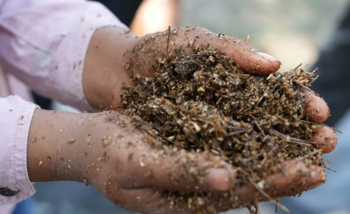
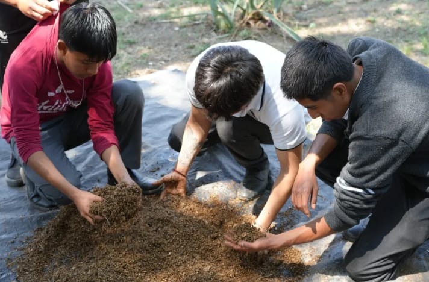
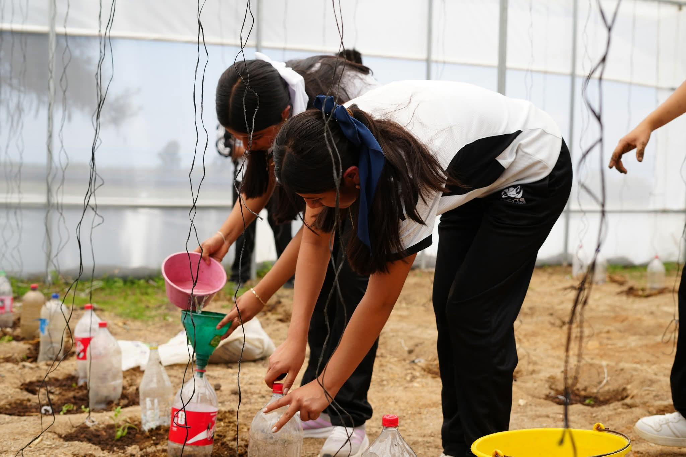
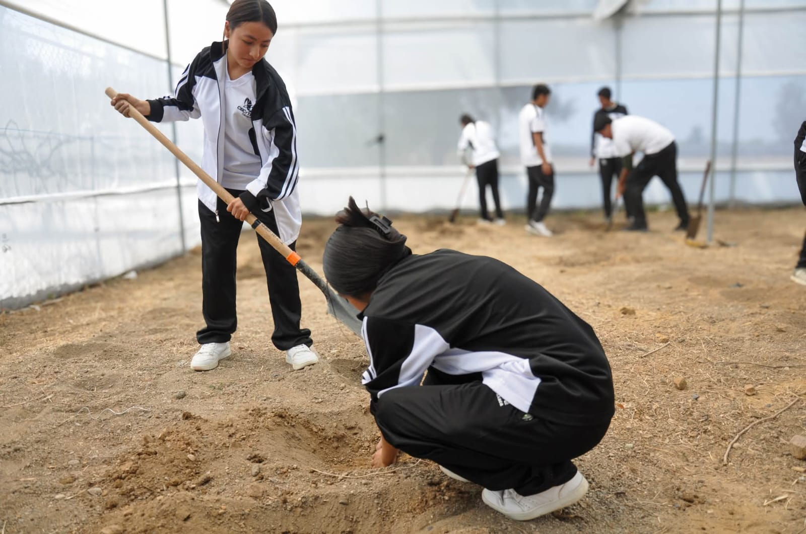
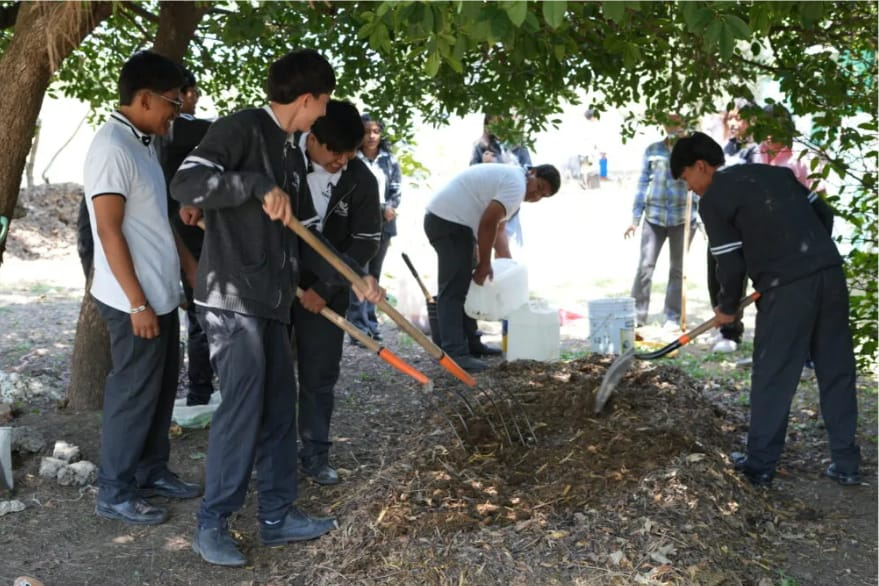
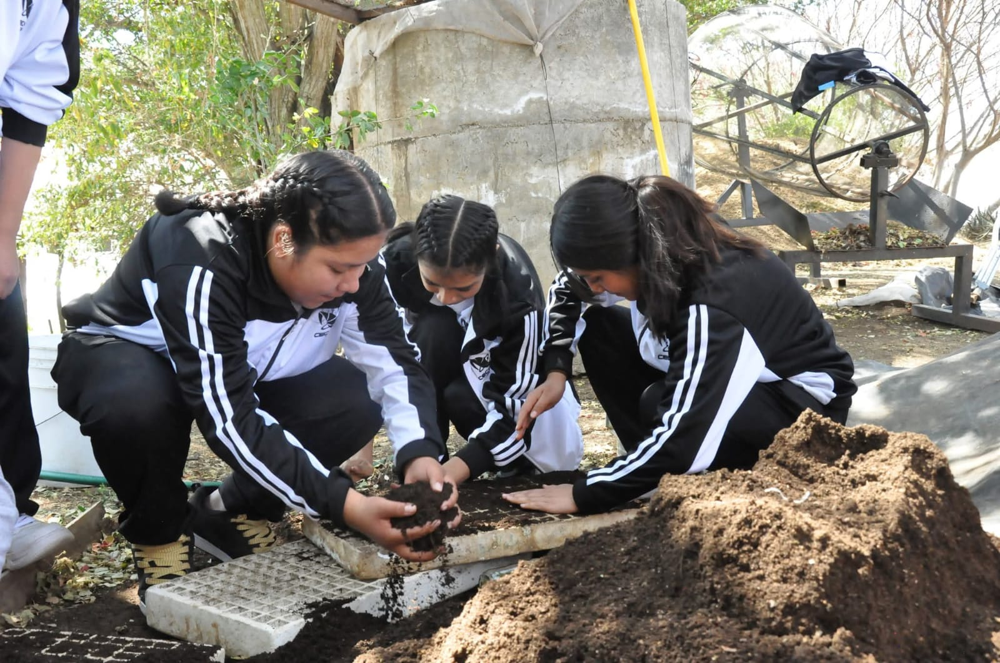
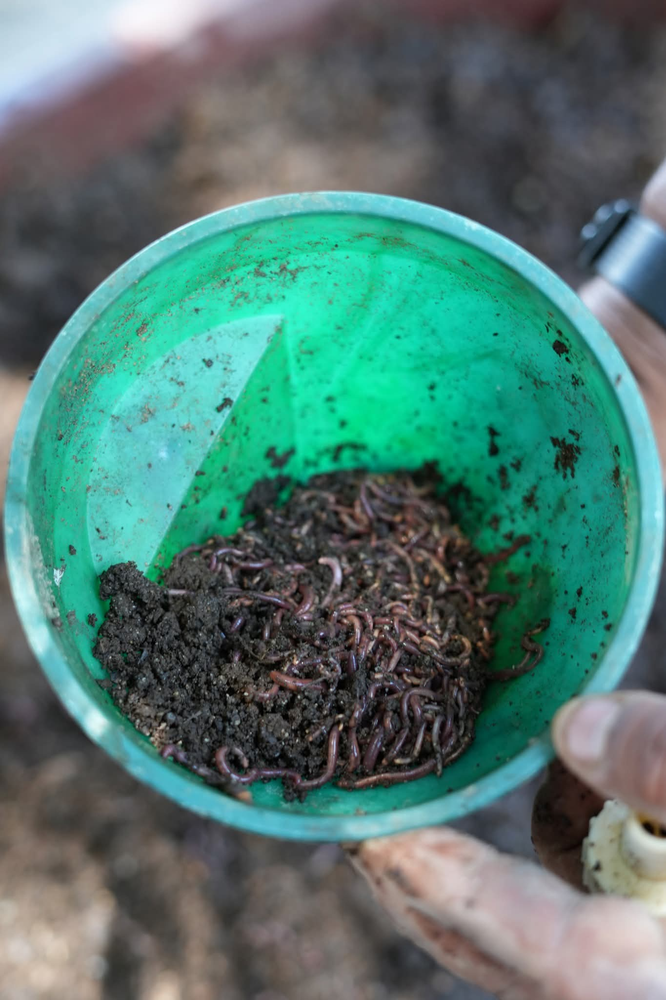
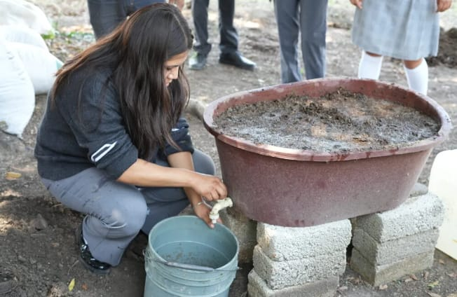
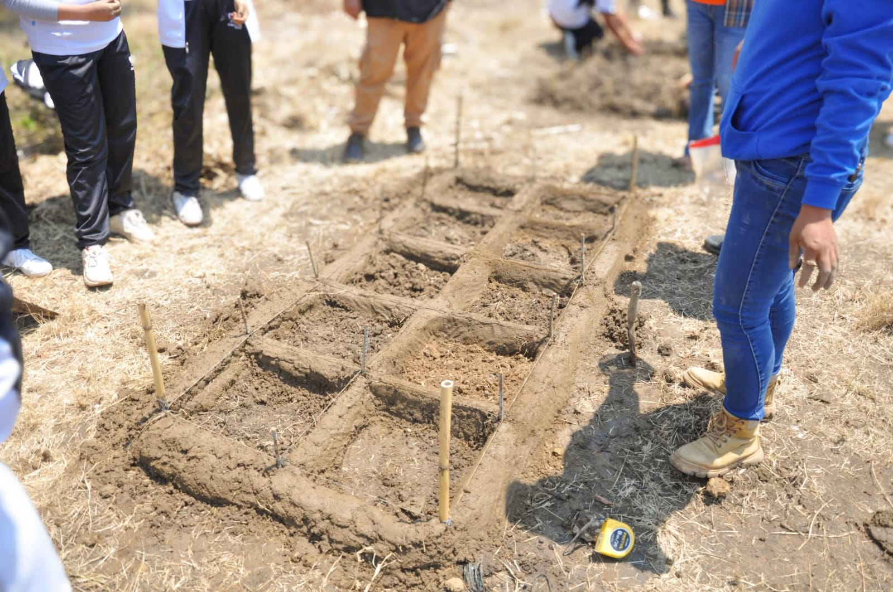
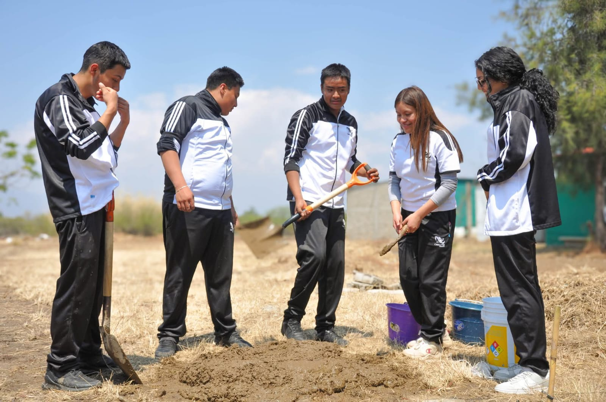

Bienvenidos a nuestro proyecto escolar de siembra saludable y sustentable
Bienvenidos al Proyecto PEC del CECyTE EMSaD 48 Zegache, un espacio dedicado al aprendizaje y la práctica de la agricultura sustentable dentro de nuestra institución. Este proyecto tiene como propósito fomentar el cuidado del medio ambiente, el uso responsable de los recursos naturales y el desarrollo de habilidades prácticas en los estudiantes. A través de actividades como la implementación de invernaderos, camas de cultivo, lombricomposta, bocashi y el uso de bioinsumos, se busca promover una educación integral basada en el trabajo en equipo, la responsabilidad y el respeto por la naturaleza.
Bio Insumos
Los bioinsumos se utilizan en la agricultura para mejorar el crecimiento de las plantas y proteger los cultivos de plagas y enfermedades. Estos pueden elaborarse a partir de plantas, microorganismos o materiales orgánicos, y se presentan en forma de fertilizantes, insecticidas o fungicidas naturales. Los bioinsumos no contaminan el medio ambiente ni dañan la salud, por lo que son una alternativa sustentable y segura. Además, ayudan a fortalecer las plantas, mejorar la calidad del suelo y mantener el equilibrio ecológico.
Tipos principales
Biofertilizantes: Contienen bacterias u hongos que ayudan a fijar el nitrógeno y solubilizar el fósforo en la tierra, mejorando la nutrición.
Bioplaguicidas / Biocontroladores: Usan microorganismos (como Bacillus o Trichoderma) para repeler, inhibir o eliminar plagas y hongos dañinos sin dañar el ecosistema.
Bioestimulantes: Compuestos derivados de algas, aminoácidos o ácidos húmicos que mejoran la tolerancia de las plantas al estrés (sequía, calor) y su metabolismo general.
Ventajas:
Regeneran la salud del suelo, reducen el impacto ambiental, son seguros para la salud humana y mejoran la calidad de los cultivos
Desventajas:
Su efectividad requiere condiciones climáticas específicas y conocimientos técnicos para su correcta aplicación.


Invernadero
Los invernaderos son estructuras cerradas, generalmente construidas con materiales como plástico o vidrio, que se utilizan para cultivar plantas en un ambiente controlado. Su función principal es permitir el paso de la luz solar y retener el calor en su interior, creando una temperatura más estable y adecuada para el crecimiento de los cultivos. Gracias a esto, los invernaderos protegen a las plantas de condiciones climáticas adversas como el frío, el viento o la lluvia intensa, además de reducir la presencia de plagas. También permiten regular factores como la humedad y el riego, lo que favorece un mejor desarrollo de las plantas.
Una de las caracteristas son:
-Mantiene una temperatura adecuada.
-Protege a las plantas de lluvia, viento y plagas.
-Permite el cultivo durante todo el año.
Importancia del invernadero:
-Mejora la produccion de las plantas.
-Permite experimentar con diferentes cultivos.


Composta Biodinamica
La composta biodinámica es un tipo de abono orgánico que se elabora a partir de la descomposición de residuos naturales como restos de plantas, estiércol y otros materiales orgánicos, siguiendo principios de la agricultura biodinámica. Este proceso no solo busca transformar los desechos en fertilizante, sino también fortalecer la vida del suelo mediante el uso de preparados naturales que estimulan la actividad de microorganismos. La composta biodinámica se caracteriza por ser rica en nutrientes y por mejorar la estructura del suelo, favoreciendo un crecimiento más saludable de las plantas.
Beneficios principales
-Biocatalizadores naturales: Los preparados actúan como enzimas u hormonas vegetales que aceleran la descomposición y mejoran la retención de agua.
-Estabilización de nutrientes: Evita la pérdida de nitrógeno y carbono durante el proceso de compostaje.
- Resiliencia climática: Al aplicarlo a los cultivos, fortalece el sistema inmunológico de las plantas y equilibra biológicamente el suelo.



Lombricomposta
La lombricomposta es un proceso natural mediante el cual las lombrices transforman los residuos orgánicos, como restos de frutas, verduras, hojas secas y papel, en un abono rico en nutrientes llamado humus. Este proceso ayuda a descomponer la materia orgánica de manera rápida y eficiente, produciendo un fertilizante de alta calidad que mejora la estructura del suelo y favorece el crecimiento de las plantas. La lombricomposta es muy importante en proyectos escolares y agrícolas porque permite aprovechar los desechos orgánicos, reducir la cantidad de basura y promover prácticas sustentables. Además, el abono obtenido es completamente natural, no contamina el medio ambiente y aporta microorganismos beneficiosos que enriquecen la tierra y ayudan a mantener cultivos más sanos y productivos.


Metodo Zuni Waffles
El método Zuni Waffle es una técnica, que consiste en dividir el terreno en pequeños cuadros hundidos en el suelo, formando una especie de patrón similar a un "waffle". Cada uno de estos cuadros funciona como una pequeña área de cultivo que ayuda a retener el agua de lluvia o riego, evitando que se pierda por escurrimiento o evaporación.
Principios y beneficios principales:
-Retención de agua: Las depresiones cuadradas actúan como cuencas que capturan y retienen la poca agua de lluvia o el riego manual, evitando que se escurra y se pierda en el suelo seco.
-Microclima protegido: Los muros perimetrales de tierra o arcilla protegen a los cultivos de los vientos secos y actúan como masa térmica. Durante el día absorben el calor (refrescando las plantas), y por la noche lo irradian (manteniéndolas calientes).
-Eficiencia extrema: Al ser pequeños espacios cerrados, puedes concentrar el abono, el mantillo y el agua exactamente donde lo necesitan plantas específicas, en lugar de desperdiciar recursos regando áreas vacías.


